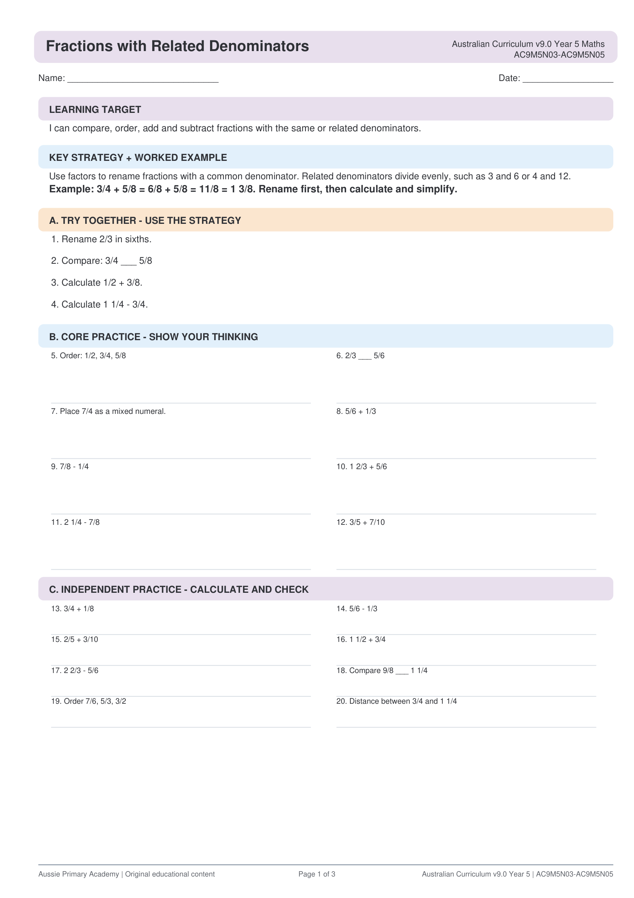

Year 5 · Maths · AC9M5N03 / AC9M5N05
Fractions with Related Denominators
Help Year 5 students compare and work with fractions that have related denominators — free printable PDF with answer key.
Curriculum aligned Answer key included Free printable PDF

Quick Facts
- Primary learning: Maths · Fractions with related denominators
- Year level: Year 5
- Curriculum: AC9M5N03 / AC9M5N05
- Format: Printable A4 PDF
- Best for: Classroom, homework, tutoring, homeschool
About this worksheet
This Year 5 Maths worksheet supports students as they compare and calculate with fractions that have related denominators, building readiness for more complex fraction work.
Ready to print and use for whole-class lessons, small groups, homework or home learning.
Learning Intention
Help Year 5 students compare and work with fractions that have related denominators.
Curriculum Alignment
AC9M5N03 / AC9M5N05 — Compare and order fractions with related denominators and solve problems involving addition and subtraction of fractions with related denominators.
Aussie Primary Academy is an independent publisher and is not endorsed by ACARA.
Skills Practised
- Comparing fractions
- Related denominators
- Fraction addition
- Fraction reasoning
Teacher / Parent Notes
Model with fraction bars or number lines first. Emphasise finding common related denominators before adding or comparing.
How to use this worksheet
- Whole class: Explicit teaching + guided practice
- Small groups: Targeted skill practice
- Homework: Send home for extra practice
- Tutoring / homeschool: Independent or 1:1 support